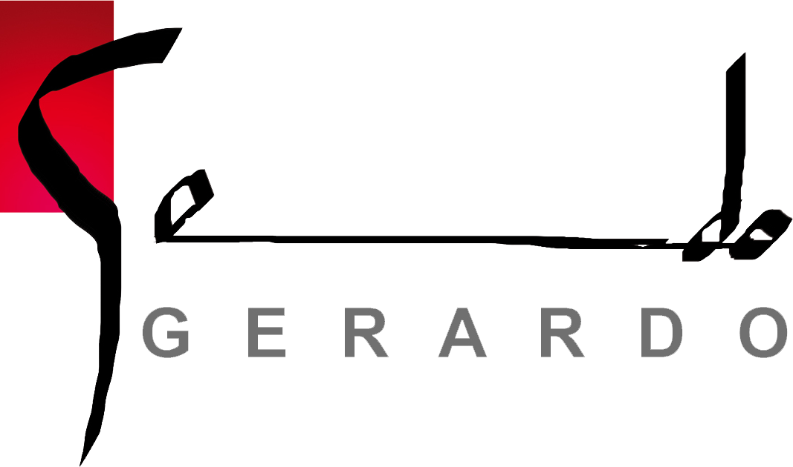

Autodidacta. Con 25 años cumplidos como profesional del diseño gráfico, ilustración, caligrafía y pintura. Comienzo a los 18 años a pintar en la calle y trabajar en el Rastro de Madrid como escribiente, redactor y diseñador de sobres y cartas (actividad que aún mantengo, para deleite mío y de los destinatarios, - en “Retratos” podrás ver la edición de mi própio sello de correos). En las artes plásticas clásicas domino todas las técnicas de dibujo y pintura (acuarela, oleo, tinta, pastel, ceras, acrílico, tempera, lapiz, soporte cerámico...etc.) Y en las contemporáneas manejo el Photoshop, Illustrator e InDesing
Viviendo en un contínuo períplo he ido absorviendo influencias de todo tipo de realizaciones artísticas y tengo en mi haber exposiciones por buena parte de Europa y América del Sur. He trabajado y trabajo, para editorial, prensa, publicidad, alimentación, hostelería, pequeña, mediana y gran empresa, mantengo obra pictórica en las galerías Arte Latino (Ingoldstad-Alemania), Amaga (Avilés), Samuel (Valladolid) y mis retratos siguen saltando las lágrimas de quién me los encarga. Vamos, que esto es un no parar, como demuestran las imágenes que ilustran esta web
¡Que la disfrutes y hasta pronto!